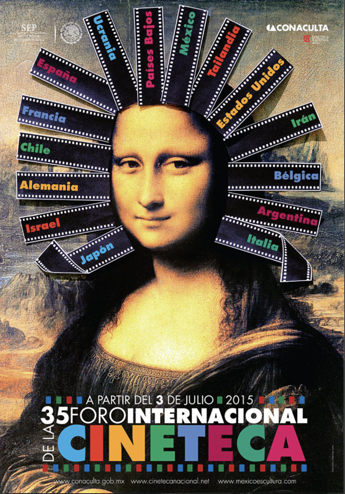
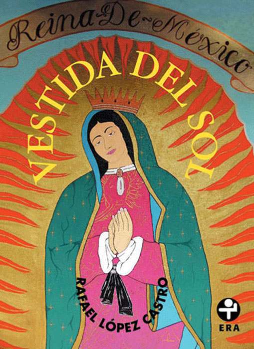

Graphic design in the 2010s expanded into digital platforms and interdisciplinary practices. Designers explored new formats such as interactive media, social networks, and self-publishing. There was also a renewed interest in local identity, craft, and independent design practices, combining traditional references with contemporary approaches.

